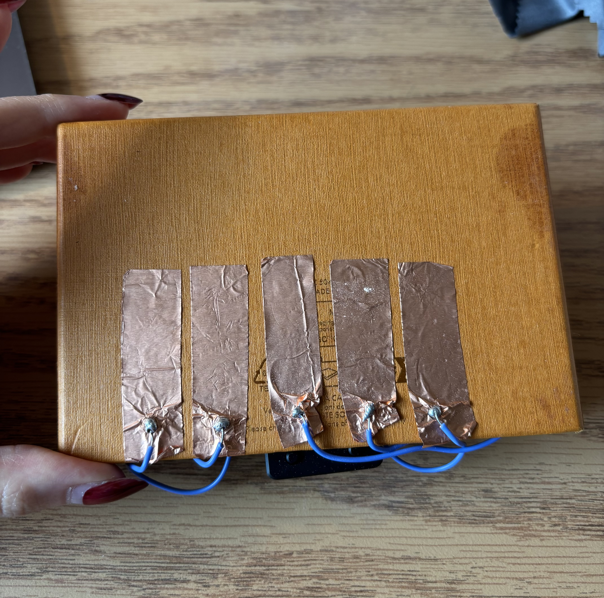
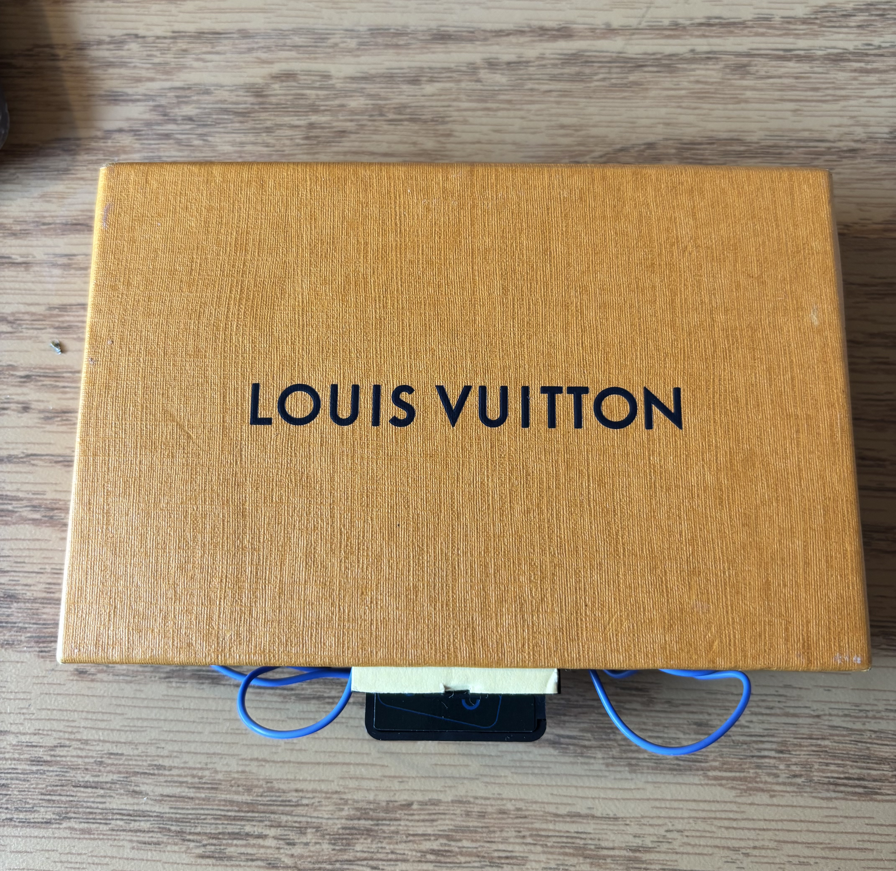
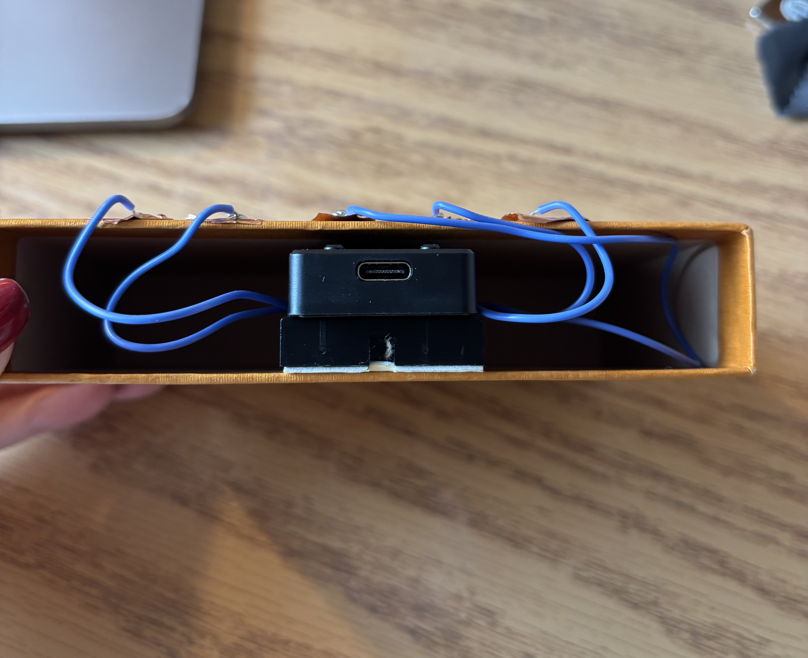
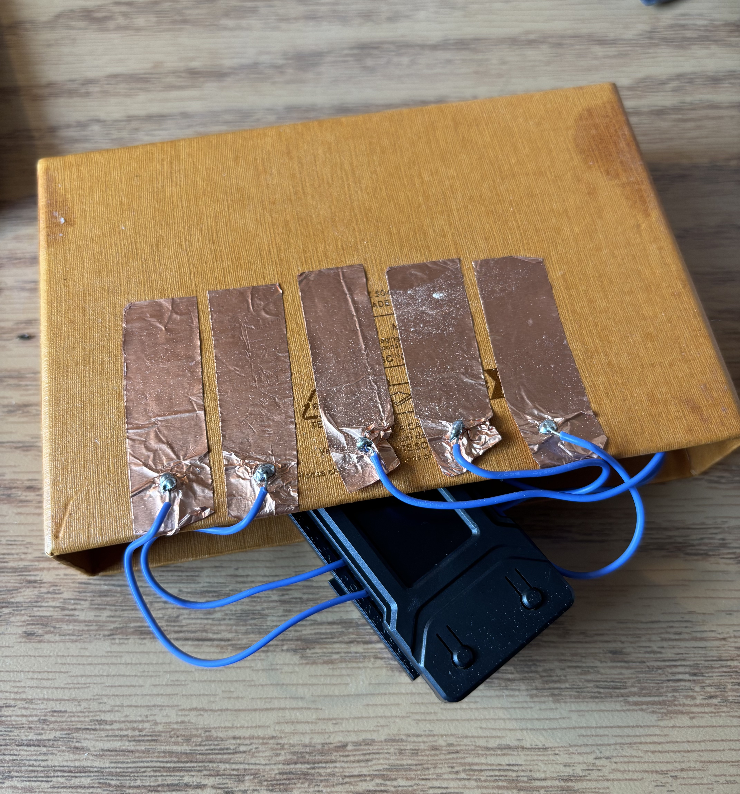

Louis Vuitton Limited Edition Piano
A five-key touch-sensitive synthesizer built on an ESP32 TTGO T-Display. The touch pads sit on top of a Louis Vuitton box like miniature piano keys, and the instrument streams sensor data over serial to a laptop running real-time visuals and sound generation. Two modes — melodic notes and ambient textures — are switchable entirely from the touch interface, making the box a self-contained performance instrument.
The project merges fashion packaging with electronics: the LV box becomes both the enclosure that hides the breadboard and ESP32 and the stage on which the keys are played. The result is something that looks like a luxury collectible but sounds like a synth.
Two Modes of Operation
The instrument has two distinct sonic and visual personalities, switchable by long-pressing pad5 for roughly one second. The current mode is indicated by both the laptop visuals and the sound behavior, so the performer always knows which mode is active.
Mode 1 — Melodic Notes
Each of the five pads plays a distinct pitched note mapped across a musical scale. Short taps produce short, percussive tones; holding a pad sustains the note with a looped envelope. The laptop visuals respond with bright, discrete color pulses — one per pad — so each key has its own visual signature. This mode is designed for playing melodies and rhythmic patterns.
Mode 2 — Textures / Effects
Pads control continuous sound parameters instead of triggering individual notes. Pad1 adjusts drone pitch, pad2 sweeps a filter cutoff, pad3 controls reverb depth, pad4 sets LFO rate, and pad5 (when not used for mode switching) triggers envelope shapes. Touching and holding different combinations sculpts evolving ambient textures. The visuals shift to flowing gradients, blur, and particle effects that mirror the continuous nature of the sound.
Software Architecture
The system is split into two halves that communicate over USB serial:
-
ESP32 firmware (
main.cpp): reads all five capacitive touch pins viatouchRead(), converts raw values to binary states using calibrated thresholds, detects the pad5 long-press for mode switching, and prints a CSV line (mode,p1,p2,p3,p4,p5) at ~20 Hz over serial. -
Laptop visuals & sound
(
main.py): a Python program usingpyserialto read the CSV stream,pygamefor real-time graphics, andnumpyfor tone generation. It parses the mode flag and pad states each frame and dispatches to the appropriate rendering and audio engine.
An optional web-based visualizer is also included: a Python
WebSocket server (server.py) reads serial and
broadcasts JSON to a browser client
(index.html) that draws pads on a canvas and
plays tones via WebAudio.
Enclosure & Build
The breadboard is mounted inside the base of the LV box with double-sided tape. The ESP32 plugs into the breadboard, and its USB port faces a small notch cut in the side of the box for the cable. Five jumper wires run from the breadboard up through holes in the lid to the copper-tape pads on top.
Each pad is labeled (1–5) with a small marker dot on the copper tape. Pad5 is placed at the far right and marked distinctly because it doubles as the mode-switch key. The lid is removable so the breadboard can be accessed for debugging or rewiring.
To minimize false triggers, sensor wires are kept short, ground and shielding traces on the breadboard are isolated from the touch lines, and adjacent pads have a small gap between them on the box lid.
Video Documentation
Photos



Code & README
The full source code for both the ESP32 firmware and the laptop visuals/sound program lives in the following repository:
- Repository: https://github.com/jessicasunxx/skin-synth
The README includes build/upload instructions, a wiring diagram, dependency list, and usage notes so a third party can reproduce the instrument. Key files:
-
esp32-touch-instrument/src/main.cpp— firmware that reads touch sensors and streams CSV over serial -
esp32-touch-instrument/platformio.ini— PlatformIO config for the TTGO T-Display -
laptop-visuals/main.py— Python program for real-time visuals and sound (requirespyserial,pygame,numpy) -
web-visuals/server.pyandweb-visuals/index.html— optional WebSocket-based browser visualizer
To build and run:
- Clone the repository.
-
Flash the ESP32:
pio run -d skin-synth/esp32-touch-instrument -e ttgo-t1 -t upload -
Install Python dependencies:
pip install pyserial pygame numpy -
Run the desktop visuals:
python skin-synth/laptop-visuals/main.py - Touch the pads and play — long-press pad5 to toggle modes.
Reflection
Building the LV Piano taught me how much the enclosure shapes the instrument. Early prototypes with bare wires on a breadboard felt fragile and clinical. The moment I mounted the copper keys on the box lid and hid the electronics inside, the same circuit became something people wanted to touch and explore. The piano-key metaphor gave first-time users instant confidence about how to interact with it, even without instructions.
On the software side, splitting the system into a simple CSV stream from the ESP32 and a full Python audio/visual engine on the laptop kept each half easy to debug independently. I could test the firmware with a serial monitor and the visuals with fake data before connecting them. The two-mode system pushed me to think about how the same physical gesture (touching a pad) can mean very different things depending on context, which is a design problem that extends well beyond this project.
The biggest technical challenge was calibrating touch thresholds so the pads responded reliably without false triggers from adjacent keys or ground noise. Keeping the wires short and physically separating the copper pads solved most issues, but I learned that capacitive touch is deeply sensitive to the physical environment — humidity, hand moisture, and even the table surface all matter.
If I were to extend the project, I would add MIDI output so the instrument could drive any software synth, and experiment with pressure sensitivity by reading the raw analog touch values instead of thresholding them to binary.